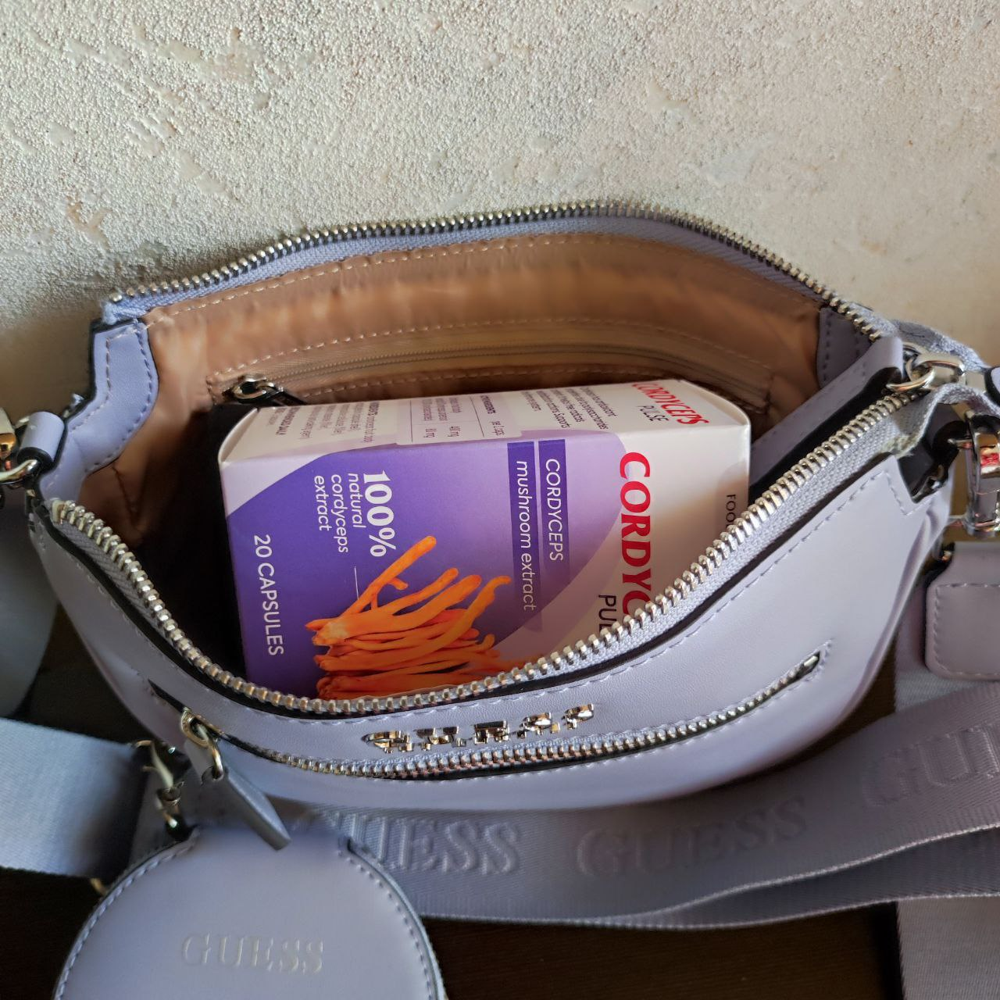
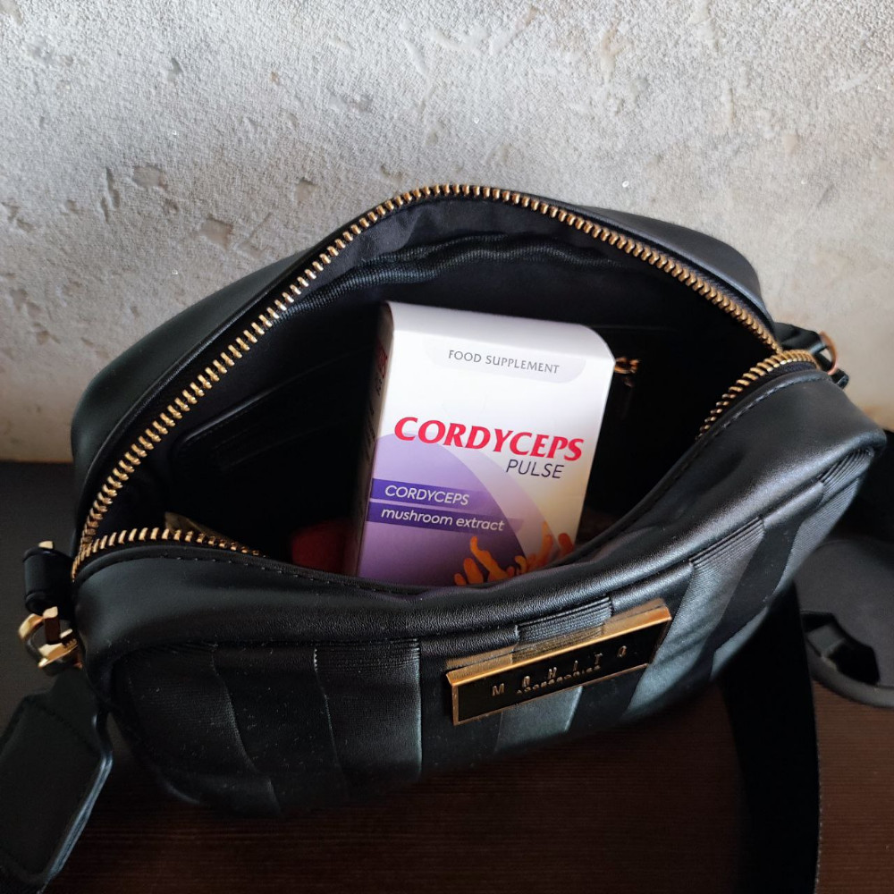

„Хормонът на смъртта" — кортизол: българска лекарка разкри защо след 35 години пълнеете, дори когато почти не ядете, и как хиляди жени свалиха до 20 кг за 17 дни
Кортизолът разрушава метаболизма ви отвътре. Блокира изгарянето на мазнини. Принуждава тялото да натрупва всяка калория. Докато не го спрете — никоя диета няма да помогне. 54-годишната Яна от София свали 24 кг без диети и упражнения.

Лекарите го наричат „хормонът на смъртта". Кортизолът — стресовият хормон, който след 35-ата година започва да разрушава тялото ви отвътре. Блокира изгарянето на мазнини, причинява отоци, умора, постоянен глад. И именно ТОЙ е причината да пълнеете — дори когато почти не ядете.
Скорошно проучване на български специалисти разкри природна съставка, която може да спре кортизола и да помогне на жените да се отърват от до 4 кг мазнини седмично — без диети, без упражнения, без гладуване. До 20 кг чисти мазнини за месец. Внимание: този метод няма абсолютно нищо общо с разхлабителни!
Ако сте над 35 години и не можете да отслабнете, каквото и да правите — прочетете тази статия до края. Ще разберете как кортизолът саботира тялото ви, защо никоя диета не може да работи, докато не го спрете, и какъв прост природен ритуал може да промени всичко. Без гладуване, без фитнес, без хирургически интервенции.
„Бях на 54 години и се страхувах да отида на плажа с внуците си"
Казвам се Яна Иванова. На 54 години съм и съм от София. Четири години излишни килограми ме превърнаха в отшелница. Мазнините се натрупваха на корема, бедрата, ръцете, под брадичката. Ядях много малко, но теглото продължаваше да расте.
Интимният ми живот напълно угасна. Срамувах се. Вече не се чувствах като жена. Загубих самочувствието си, загубих желанието, загубих себе си.
Всяка сутрин се събуждах и първото нещо, за което мислех, беше тялото ми. Тази тежест. Това усещане, че нямаш контрол над нищо. Че собственото ти тяло е твоят враг. Познавате ли го? Това чувство, когато се гледате в огледалото и не се познавате?
Опитах всичко — чайове за отслабване, хапчета, фитнес абонамент, кето диета, интермитентно гладуване. Хапчетата ми причиняваха болки в стомаха и диария. Във фитнеса се мъчех месеци, а килограмите или не мръдваха, или се връщаха обратно. От кето диетата ми се виеше свят и тя също не действаше.
Лекарите само свиваха рамене: „Това е възрастта, метаболизмът се забавя, свикнете." Никой от тях не попита за нивото на кортизола. Никой не каза, че организмът ми е отровен от „хормона на смъртта", който разрушава метаболизма ми всяка минута.
Един ми предписа диуретици. Друг препоръча операция — бариатрична процедура за 15 000 лв. Трети каза да ям по-малко. Но аз ядях 1 200 калории дневно и все пак пълнеех!
Стигнах до такова отчаяние, че плаках нощем. Почти не излизах от дома. Бавно преставах да живея. Дъщеря ми каза: „Мамо, изглеждаш с десет години по-стара, отколкото си." Това беше моментът, в който си казах — или ще се промени, или…
Но тогава всичко се промени
На пазара в София срещнах жена, която някога страдаше от абсолютно същия проблем. Забеляза колко съм нервна — стоях пред щанд с дрехи и разглеждах поли, които не можеха да ми станат. Попита ме какво става. Не се сдържах и ѝ разказах всичко.
Усмихна се и каза, че тя е била още по-зле — теглила 112 кг и лекарите я предупредили, че я заплашва инфаркт. Докато не открила статията на доктор Людмила Емилова.

Д-р Людмила Емилова, 74 години — водещ български специалист по хормонален метаболизъм и ендокринология. Повече от 40 години помага на жените да бъдат по-стройни, по-здрави и да се чувстват отново наистина живи. Авторка на десетки научни публикации за влиянието на хормоните върху телесното тегло. Именно тя за пръв път нарече кортизола „хормонът на смъртта" — и обясни защо е главният виновник за наднорменото тегло след 35-ата година.
Поръчах си Cordyceps Pulse още същата вечер. На следващата сутрин, след първата капсула, се събудих и не можах да повярвам на усещанията си. Коремът беше по-мек. Отоците спаднаха. След три дни дрехите бяха по-свободни. Не промених особено хранителния си режим. Не ходих на фитнес. Просто следвах това, което доктор Емилова препоръча.
На втория ден изчезна постоянният апетит, който ме измъчваше с години. Престанах да ходя до хладилника нощем. На третия ден си облякох дънки, които не бях носила две години. На петия ден съпругът ми каза: „Яна, какво стана? Изглеждаш различно." А аз за пръв път от четири години се усмихнах.
Защо пълнеете — дори когато не ядете?
Заедно с екип от водещи учени доктор Емилова разкри проста истина, на която отначало никой не вярвал: причината за наднорменото ви тегло не е в чинията ви.
— Д-р Людмила Емилова, изследователски екип на Метаболитния център София
Виновни са хормоните, които блокират метаболизма ви след 35-ата година. По-конкретно хормонът, който наричаме „хормонът на смъртта" — кортизол.
Какво е кортизолът? Това е стресовият хормон, който се произвежда от надбъбречните жлези. В малки дози е необходим — помага ни да реагираме на опасност, регулира кръвното налягане, помага с имунитета. Но след 35–40 години тялото започва да го произвежда все повече. И именно в това е проблемът.
Представете си го като капка отрова, която получавате всеки ден. Една капка нищо не прави. Но след година, две, пет — тази отрова се натрупва. И тялото ви започва да се разпада.
Какво точно прави кортизолът с тялото ви?
- Разрушава частта от ДНК, отговорна за изгарянето на мазнини — клетките ви буквално губят способността да превръщат мазнините в енергия
- Забавя метаболизма — дори да ядете малко, тялото работи в „пестелив режим" и натрупва всяка калория
- Принуждава тялото да натрупва мазнини — дори от кисело мляко, дори когато спите, дори от чаша вода с лимон
- Увеличава апетита — постоянният глад, особено за сладко и мазно, не е ваша вина — това е кортизолът
- Причинява възпаления — отоци, болки в ставите, умора, лош сън — всичко това е следствие
- Разрушава колагена — кожата губи еластичност, появяват се бръчки, целулит, увиснала кожа
Затова пълнеете по-бързо от преди. Затова коремът не изчезва. Затова се появяват отоци, слабост, стареене. И затова никоя диета, тренировка или инжекция не действа — борите се с последствието, а не с причината.
Доктор Емилова и екипът ѝ прекараха 15 години в изследвания, за да намерят начин да нормализират нивото на кортизола без лекарства, без хормонална терапия, без странични ефекти. И го намериха — в рядка природна съставка, която човечеството познава от хилядолетия, но чийто истински потенциал за отслабване е открит едва наскоро.
Cordyceps sinensis — тайното оръжие срещу наднорменото тегло
Учените идентифицираха природна съставка, която може да направи почти невъзможното в тялото — стабилизира хормоните, нормализира кортизола и активира естественото изгаряне на мазнини. Това е Cordyceps sinensis — рядка гъба, която традиционната китайска медицина използва от хилядолетия.
В Тибет я наричат „златната пеперуда" или „гъсеничната гъба". В продължение на векове тя е била толкова рядка и скъпа, че само китайските императори и висшите чиновници са можели да я употребяват. Едва съвременните биотехнологии направиха възможно нейното отглеждане и достъпност за обикновените хора.
Как действа Cordyceps sinensis?
- Нормализира нивото на кортизола — основната причина за неконтролираното наддаване на тегло. Тялото спира да бъде в състояние на хроничен стрес и най-накрая „освобождава" мастните запаси
- Високоефективен е за превенция на затлъстяването — като част от комплексна терапия за намаляване на телесното тегло действа на няколко нива едновременно
- Оздравява организма и участва в създаването на здрава чревна микробиота — 80 % от имунната система се намира в червата, и именно тяхното състояние определя дали пълнеете или отслабвате
- Подобрява метаболитните показатели — тялото спира да натрупва мазнини и започва да ги изгаря като гориво
- Стимулира производството на АТФ — органично съединение, благодарение на което се повишава физическата активност и издръжливост. Вместо умора и слабост ще имате енергия за целия ден
- Регулира нивото на кръвната захар — изчезват постоянните желания за сладко, спирате да „опразвате хладилника" нощем
„Cordyceps sinensis е уникален с това, че не действа само върху симптомите — атакува директно хормоналната причина за наднорменото тегло. Тялото се превключва от режим на натрупване в режим на изгаряне. И то без никакви странични ефекти. За 40 години практика не съм виждала нищо по-ефективно."
— Д-р Людмила Емилова
Но самият Cordyceps sinensis не е достатъчен. Важна е правилната форма на екстракция, концентрация и дозиране. Обикновените хранителни добавки с кордицепс, които може да намерите в аптеките, съдържат прекалено ниска концентрация на активни вещества. За да действа наистина кордицепсът за отслабване, той трябва да бъде обработен със специална технология.
Cordyceps Pulse — препаратът, който е насочен към истинската причина

Заедно с водещи специалисти доктор Емилова разработи препарат на базата на 100% натурален екстракт от Cordyceps sinensis в максимална концентрация — за да ви даде леко, красиво тяло завинаги.
Cordyceps Pulse е натурална хранителна добавка под формата на капсули (20 бр. в опаковка), която действа върху истинската хормонална причина за наднорменото тегло и ви връща стегната, еластична кожа и самочувствие.
Форма: Картонена кутия, вътре бяла пластмасова бутилка с 20 капсули.
Начин на употреба: Възрастни приемат 1 капсула 2× дневно по време на хранене. Препоръчителна продължителност на курса: 3 месеца. При необходимост курсът може да се повтори.
- Без инжекции, без диети, без упражнения
- Дори да сте на 40, 60 или 80
- Дори да имате диабет, високо кръвно или хронична умора
- Дори да сте опитали абсолютно всичко — и нищо не е помогнало
- 100% натурален състав без химични добавки
Курс на приложение — 3 месеца, които ще променят живота ви
Cordyceps Pulse е предназначен за курсова употреба. Препоръчителната продължителност на курса е 3 месеца. При необходимост курсът може да се повтори. Ето най-интересното — ефектът постепенно се засилва:
1–2 седмица: Адаптация
Cordyceps sinensis започва да нормализира нивото на кортизола. Изчезва постоянният апетит, отстъпват отоците и задържането на вода. Чувствате се по-леки, имате повече енергия. Престаявате да се будите нощем. Много жени съобщават, че за пръв път от години числата на кантара не растат — и само по себе си това е пробив.
3–4 седмица: Метаболизмът се задвижва
Мазнините започват да се разтварят — първо висцералните (вътрешни) мазнини, които обгръщат органите и са най-опасни. Именно тези мазнини причиняват диабет тип 2, високо кръвно налягане и сърдечни проблеми. Подобрява се храносмилането, чревната микробиота се възстановява. Дрехите стават по-свободни. Средна загуба: 4–7 кг.
5–8 седмица: Дълбоко прочистване на организма
Тялото се освобождава от натрупаните токсини и отпадъчни вещества. Отоците напълно изчезват, ставите спират да болят, кожата се стяга и започва да сияе. Увеличава се физическата издръжливост благодарение на повишеното производство на АТФ. Жените съобщават, че имат енергия, каквато не са имали дори на 30 години. Средна загуба: още 6–10 кг.
9–12 седмица: Стабилизиране на резултатите
Тялото е преминало в режим на изгаряне завинаги. Нормализира се кръвното налягане, холестеролът, нивото на захарта. Чувствате се като друг човек — по-лек, по-здрав, пълен с енергия. Кожата е стегната, целулитът отстъпва. Резултатът от отслабването е траен — за разлика от диетите, теглото не се връща, защото сте отстранили причината, а не само последствието.
Резултатите на Яна след 17 дни
Но да се върнем към Яна — същата 54-годишна жена от София, чиято история прочетохте в началото:
След два месеца свалих 24 кг. Започнах да нося рокли, които не бях обличала 5 години. Съпругът ми отново ме гледаше като преди. Внуците казаха: ‚Бабо, ти си красива!' И аз за пръв път от години плаках — но този път от щастие."
Яна не е единствената. Доктор Емилова е събрала хиляди подобни истории. Ето някои от тях:
Какво казват други жени, които опитаха Cordyceps
Резултати на наши клиентки — преди и след


Вижте колко е просто!
- Без диети и упражнения. Не е нужно месеци да ядете ябълки и салати. Не е нужно да се мъчите във фитнеса. Не е нужно дори да излизате от дома. Можете да ядете каквото искате — Cordyceps работи независимо от храненето ви.
- От удобството на дома. Достатъчно е да приемате 1 капсула Cordyceps 2× дневно при хранене — това е всичко. Живеете нормално, докато тялото ви се превръща в машина за изгаряне. 10 секунди сутрин, 10 секунди вечер. Това е целият „тренировъчен план".
- Без големи разходи. Никакви скъпи клиники, инжекции или операции. Никакъв абонамент за фитнес за 60 лв. на месец. Никакви скъпи диетични програми за хиляди левове.
- Без странични ефекти. 100% натурален състав. Никакви химикали, никакви хормони, никакви разхлабителни. Тялото ви получава това, от което се нуждае — нищо повече, нищо по-малко.
За кого е предназначен Cordyceps?
1. Теглите над 90 кг?
За първия месец свалете 8–12 кг, за 3 месеца курс дори 20–30 кг! Още в първите 4 седмици ще започнете да губите видимо количество мазнини. А най-важното — теглото няма да се върне, защото Cordyceps решава причината, а не симптома.
2. Притесняват ви здравословни проблеми?
Висок холестерол, високо кръвно, болки в ставите, липса на енергия, лош сън? След само 2 седмици резултатите ви ще изглеждат отлично. За 4 седмици болките ще изчезнат. Няма да живеете повече със страх за здравето си. Cordyceps не оздравява само фигурата — оздравява целия организъм.
3. Обичате вкусната храна и не можете да спазвате диета?
Не е нужно. Строгите диети дори не се препоръчват. Можете да ядете каквото искате — Cordyceps действа независимо от храненето ви. А освен това — след първата седмица ще забележите, че естествено ядете по-малко. Не защото се принуждавате — а защото тялото е престанало да изпраща фалшиви сигнали за глад.
4. Мразите спорта?
Не се насилвайте да тренирате. Тялото ви вече е под натиск заради наднорменото тегло — насилствените упражнения могат да причинят още повече стрес на надбъбречните жлези и производството на кортизол ще се увеличи. Препоръчва се да започнете с лека физическа активност след 2–4 седмици, когато станете по-леки. А благодарение на повишеното производство на АТФ ще имате и желание за движение!
5. Комплексирате ли се заради теглото?
Все по-трудно намирате дрехи, които ви стоят добре? Не се чувствате привлекателна? Избягвате огледала, снимки, бански? Дайте си по-малко от месец. Най-накрая ще можете да облечете красиви рокли с няколко размера по-малки. Най-накрая ще искате да си правите селфита. Най-накрая ще се чувствате като жена.
6. Страхувате се, че няма да подейства?
Разбираме. След толкова разочарования е естествено да сте скептична. Но Cordyceps Pulse не е „поредният чудодеен препарат" — това е научно обосновано решение, което е насочено към истинската причина за наднорменото тегло. Хиляди жени в България вече го опитаха с успех.
Какво получавате с поръчката:
Животът е твърде красив, за да го намалявате с излишни килограми. Не мислите ли? Не е нужно да страдате. Не е нужно да се срамувате. Не е нужно да избягвате огледалата. Не рискувате абсолютно нищо. Единственото, което можете да загубите, е 20, 30 или дори 50 кг излишно тегло.
Попълнете краткия формуляр по-долу и получете отстъпка 50 % за Cordyceps Pulse. Офертата е ограничена!
Не е необходимо да плащате предварително. Нашият куриер ще ви достави пратката, за да сте сигурни, че получавате оригинален продукт. Плащате при получаване.
Поръчайте Cordyceps с 50 % отстъпка
Коментари (14):

